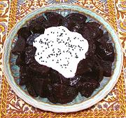

|
Beet & Yogurt SaladTurkey - Yogurtlu Pancar Salatasi | ||||
| Makes: Effort: Sched: DoAhead: |
2-1/2 # ** 1-1/2 hrs Yes |
Beet and Yogurt salads are popular in Turkey, but in Armenia, they have been largely replaced by Russian style vinaigrette versions. Stirred up a little this one is very colorful. | |||
|
------- 2 2 2 1/4 1/2 1/4 ------ 3 1/4 14 ------ 1 |
--- # T T c t t --- cl t oz --- t |
-- Beets Beets (1) Lemon Juice Olive Oil Parsley, flat Salt Pepper -- Dressing Garlic Salt Yogurt (2) -- Garnish Nigella seeds |
Make - (1-1/2 hrs - 20 min work)
|